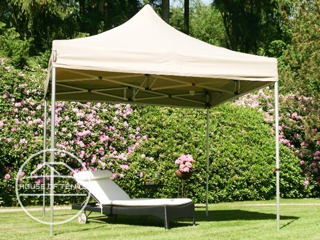

Weatherproof & stable
Aluminium and steel frames
All models include a waterproof roof
All models include a waterproof roof
Weatherproof gazebos: waterproof, stable & UV-resistant
Whether pop up gazebos, garden gazebos or marquees - all gazebo models from House of Tents are of very high quality. They are an effective shelter from harmful UV rays, rain, and wind. Find your favourite gazebo for a summer party, outdoor wedding, or to leave standing in your home garden all year round without hesitation!
Roof materials in comparison
House of Tents offers you a wide range of gazebos in different sizes, frames and roof materials. Whether polycarbonate, polyester, PE or PVC canopies - what exactly are the properties of these materials? How weatherproof is which model?
Polycarbonate

Advantages:
- Robust & rigid
- High heat resistance
- Protects well in case of hail
- Highly weather resistant
- 100 % waterproof
Our products with polycarbonate
Polyester

Advantages:
- Lightweight & inexpensive
- Dries quickly after rain
- Doesn't require much maintenance
- Highly abrasion resistant
- With PVC coating 100 % waterproof
Our products with polyester
Polyethylene (PE)

Advantages:
- Light & inexpensive
- Space-saving in transport
- Enables quick assembly and dismantling
- Easy to handle
- 100 % waterproof
Our products with polyester
PVC

Advantages:
- Durable & strong
- Flame retardant
- Can be repaired in an emergency
- Similar to the feel of a truck tarpaulin
- 100 % waterproof
Our products with polyester
Which gazebo for which weather?


For protection from the sun
All high quality gazebos at House of Tents have a high UV resistance - ideal for hot summer days. If UV protection 30+ is enough for you, then the Rendezvous and Sunset steel garden gazebos are just right. If you would like increased protection against UV radiation, then we recommend either our PE marquees, our garden gazebos in the Premium and Deluxe lines, or our Economy steel and Economy aluminium pop up gazebos. All these gazebo tents offer great UV protection of SPF 50+. For the ultimate in sun protection all of our high quality PVC (Profi-line) marquees, as well as the Premium steel and Professional aluminium pop up gazebos offer UV protection of SPF 80+.
For protection from the rain and snow
All gazebos at House of Tents are 100% waterproof. But especially in winter, a season with a lot of wind and heavy rain, the gazebo frame makes all the difference. For example, heavy duty gazebos are more weatherproof than wooden frames. Wooden gazebos are also waterproof, but over time, the wood can rot and splinter. Steel gazebos on the other hand, are very weather-resistant while aluminium gazebos provide the best protection from rust.
For garden gazebos that will be standing in one place over winter, we advise choosing a model with a hardtop, as the heavy duty polycarbonate panels can stand up to the worst weather conditions. Depending on the model, they can even withstand snow loads of 50 to 80 kg/m².
For garden gazebos that will be standing in one place over winter, we advise choosing a model with a hardtop, as the heavy duty polycarbonate panels can stand up to the worst weather conditions. Depending on the model, they can even withstand snow loads of 50 to 80 kg/m².